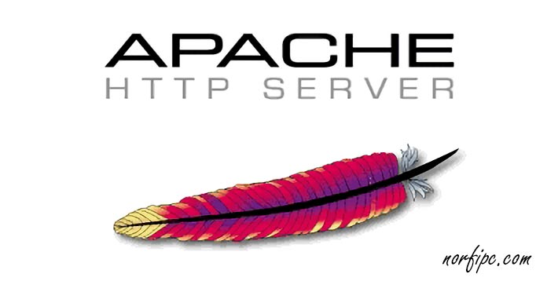

APACHE
El servidor HTTP Apache es un servidor web HTTP de código abierto, para plataformas Unix (BSD, GNU/Linux, etc.), Microsoft Windows, Macintosh y otras, que implementa el protocolo HTTP/1.1 y la noción de sitio virtual según la normativa RFC 2616. Cuando comenzó su desarrollo en 1995 se basó inicialmente en código del popular NCSA HTTPd 1.3, pero más tarde fue reescrito por completo. Su nombre se debe a que alguien quería que tuviese la connotación de algo que es firme y enérgico pero no agresivo, y la tribu Apache fue la última en rendirse al que pronto se convertiría en gobierno de Estados Unidos, y en esos momentos la preocupación de su grupo era que llegasen las empresas y "civilizasen" el paisaje que habían creado los primeros ingenieros de internet [cita requerida]. Además Apache consistía solamente en un conjunto de parches a aplicar al servidor de NCSA. En inglés, a patchy server (un servidor "parcheado") suena igual que Apache Server. El servidor Apache es desarrollado y mantenido por una comunidad de usuarios bajo la supervisión de la Apache Software Foundation dentro del proyecto HTTP Server (httpd). Apache presenta entre otras características altamente configurables, bases de datos de autenticación y negociado de contenido, pero fue criticado por la falta de una interfaz gráfica que ayude en su configuración. Apache tiene amplia aceptación en la red: desde 1996, Apache es el servidor HTTP más usado. Jugó un papel fundamental en el desarrollo de la World Wide Web y alcanzó su máxima cuota de mercado en 2005, siendo el servidor empleado en el 70% de los sitios web en el mundo. Sin embargo, ha sufrido un descenso en su cuota de mercado en los últimos años (estadísticas históricas y de uso diario proporcionadas por Netcraft2). En 2009, se convirtió en el primer servidor web que alojó más de 100 millones de sitios web.3 La mayoría de las vulnerabilidades de la seguridad descubiertas y resueltas tan sólo pueden ser aprovechadas por usuarios locales y no remotamente. Sin embargo, algunas se pueden accionar remotamente en ciertas situaciones, o explotar por los usuarios locales maliciosos en las disposiciones de recibimiento compartidas que utilizan PHP como módulo de Apache.
Elkin Alexis Castaño Visita mi perfil
Elaborado para Validacion de Diseño de Interfases y Desarrollo de Sistemas Informaticos y Multimediales ">